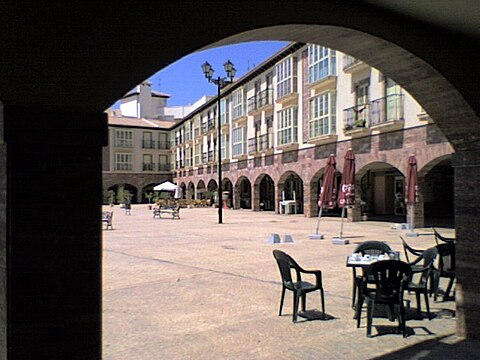
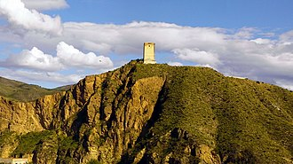
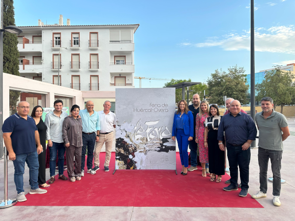
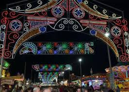

Hércal-Overa es una localidad y municipio español situado en la parte noroccidental de la comarca del Levante, Cuevas del Almanzora, Antas, Zurgena, Taberno y Vélez-Rubio, y con los municipios murcianos de Puerto Lumbreras y Lorca. Por su término discurre el río Almanzora.

FERIA DE HUÉRCAL-OVERA
La Feria de Huércal-Overa es un evento anual que se celebra en el municipio de Huércal-Overa, en la provincia de Almería. Este evento, que tiene lugar en el mes de octubre, es uno de los acontecimientos más esperados por los habitantes y visitantes de la región. La feria cuenta con una amplia variedad de actividades, entretenimiento y atracciones que atraen a personas de todas las edades.
 Una de las características más destacadas de la Feria de
Huércal-Overa es su rica programación cultural y
musical. Durante los días de la feria, se llevan a cabo conciertos de artistas locales e
internacionales, así
como actividades culturales y deportivas. Además, la feria cuenta con una zona infantil llena de
juegos y
atracciones para los más pequeños, que haya algo para todos en la familia.
Otro aspecto importante de la feria es su enfoque en la gastronomía local. Los
visitantes pueden disfrutar de
una amplia variedad de platos tradicionales almerienses, como las famosas migas, acompañadas de vino de
la zona
y otros productos deliciosos. La feria también ofrece una oportunidad para que los emprendedores locales
muestren sus productos y servicios, fomentando el comercio y la economía local.

En resumen, la Feria de Huércal-Overa es un evento vibrante y lleno de vida que celebra la cultura, la música y la gastronomía de la región. Es una oportunidad para que los vecinos y visitantes se reúnan, se diviertan y disfruten de una experiencia única y memorable
